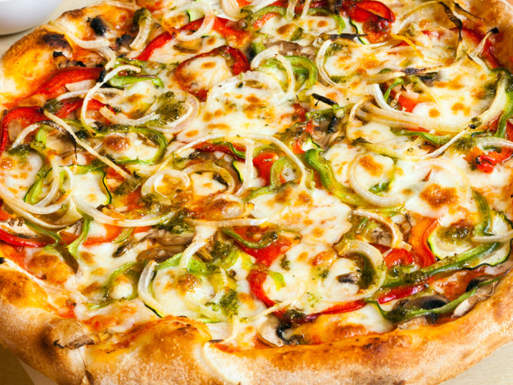

Pizza
Pizza is a savory dish of Italian origin consisting of a usually round, flattened base of leavened wheat-based dough topped with tomatoes, cheese, and often various other ingredients (such as anchovies, mushrooms, onions, olives, pineapple, meat, etc.), which is then baked at a high temperature, traditionally in a wood-fired oven. A small pizza is sometimes called a pizzetta. A person who makes pizza is known as a pizzaiolo.

Gordon Ramsay
Gordon James Ramsay OBE is a British chef, restaurateur, television personality, and writer. Born in Johnstone, Scotland, and raised in Stratford-upon-Avon, England, he founded his global restaurant group, Gordon Ramsay Restaurants, in 1997. It has been awarded 16 Michelin stars in total and currently holds a total of seven. After rising to fame on the British television miniseries Boiling Point in 1999, Ramsay had become one of the best-known and most influential chefs in the UK by 2004.
Sayan Ospanov
My friend. High qualified chef, has own vision to cooking, developed cooking skills.